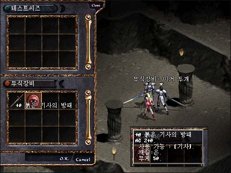
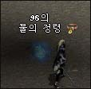
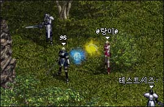
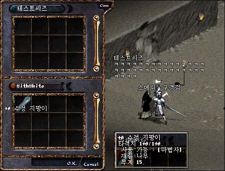

|
2002年11月6日
韓國正式伺服器11月6日更新內容 - 法師的末日
原文：韓國天堂官方網站公告
英文翻譯：Lineage Compendium
1. 加入遺忘之島，45+級的玩家可以到海音碼頭用10000金幣購買船票，你不能帶狗前往。
2. 在島上不能使用任何的傳送卷軸。
3. 在島上所以地方都是戰鬥區域。
4. 島上的怪物大約比正常的高15個等級。
5. 死後仍然會在島上的沙灘出現，要離開此島只有透過傳送NPC。
6. 在島上北方會有賣水的商人，價格約為正常的兩倍。
7. 島上會掉的道具包括受封印的武器、防具及解封卷軸。要解封道具必須帶同受封印的道具及解封卷軸往象牙塔的NPC迪泰特(Detector)。
8. 使用邪惡魔法的懲罰更改如下：
毒咒：-300正義值
闇盲咒術：-400正義值
壞物術：-600正義值
木乃伊的詛咒：-2000正義值
黑闇之影：-800正義值
弱化術：-1000正義值
疾病術：-1000正義值
以上為韓國正式伺服器的更新內容，以無意外在其他地區的伺服器亦會陸續更新。
繼召喚怪物只會對玩家造成1/8傷害後，再加上使用邪惡魔法會大幅度地減少正義值，及以往改弱瑪那魔杖、更改MP吸取上限、減低法師命中率、減少召喚怪物隻數，及在第十一章加入大量沒有用的法師新魔法等等．．．究竟法師還有生存的空間嗎？
新角色30級試鍊獎勵資料
來源：Lineage Playforum (2) (3) (4)
英文翻譯：Lineage Compendium
騎士：紅騎士之盾（防2，重50，騎士專用），它看起來很像下一個任務所需要的道具呢！

妖精：召喚元素精靈，同時他們亦可以從任務中得到精靈T恤（防0，安定值6）

法師：水晶魔法杖（1/1，重15，法師專用），裝備後可以加強每次回MP的數量，一位18精智的法師裝備此杖後每次回18MP，再配合藍水則是26MP。

王族：召喚盟友魔法書（可以召喚盟友到自己的地點）
韓國測試伺服器11月6日更新內容
原文：韓國天堂官方網站公告
更新內容很簡單，就是加入各職業的30級試鍊！以下是30級新試鍊的內容，轉載自Nue's Lineage：
新試練 Part II.. "修訂版2"
騎士:紅騎士之盾,紅騎士之劍
-->首先找甘特對話,之後去打島上的楊果里恩取得它的"爪子",即可獲得"紅騎士之劍"
-->再去銀騎村找傑瑞德(關鍵物品:紅騎劍),接受試練後到XX洞取得"復活藥水",再去找Jim,給它復活藥水後,可得"感恩的信",再去找傑瑞德,把信遞給他即可得"紅騎士之盾"
法師:水晶魔法杖
-->找吉倫接受試練,去話島XX處,擊敗"?????"不死系的骨頭碎片,帶回給吉倫,可得"神祕魔杖"
-->到象牙塔找塔拉斯接受試練,在XX處,擊敗"?????",取得不死系的骨頭,連同神秘魔法杖一並帶回給塔拉斯,即可得到"水晶魔杖"
王族:魔法書(呼喚盟友)
-->接受風木村的Aria的請求,之後去巨蟻洞(還不確定)找守門蟻(他說變種蟻跟一般蟻在對抗中),要求傳送到"變種巨蟻洞"(此蟻洞有變種巨大兵蟻,變種巨蟻女皇出沒),到了之後去剷除變種巨蟻女皇"村民的遺物",之後回來交給Aria,即可獲得"魔法書(呼喚盟友)"
妖精:神秘的水晶球
-->找精靈公主(精靈女皇的女兒)要求傳送到"達克馬勒的秘密洞窟"(注意:達克馬勒會有他召的"火精靈,水精靈,風精靈,地精靈"保護他,因此要特別小心),到那裡擊敗它取得"受詛咒的精靈魔法書",會來交給迷幻森靈之母,可得"精靈寶物(目前不確定)"
以上道具的功用均還不知道,所以問我也沒用...
另外此第二批試練的內容還有可能會再做修正的可能,上面我所述說的只是一個藍本(修訂版2)
新增的任務洞窟:
1.變種巨蟻洞(大約2F)
2.達克馬勒的秘密洞窟
3.黑暗精靈洞窟(不確定會開)
4.蛇女的房間
5.密室...
6.其他
上述之地方,皆有可能在未來在做調整或修改,當然也有可能放棄使用
韓國測試伺服器11月6日檔案內容
已知的更新如下：
1. 加入了風精靈、水精靈、及召喚四元素（火、風、地、水）精靈的圖檔。
2. 用戶端更新為21105。
 風精靈及水精靈 風精靈及水精靈
召喚出來的四元素精靈，身型較細小 |